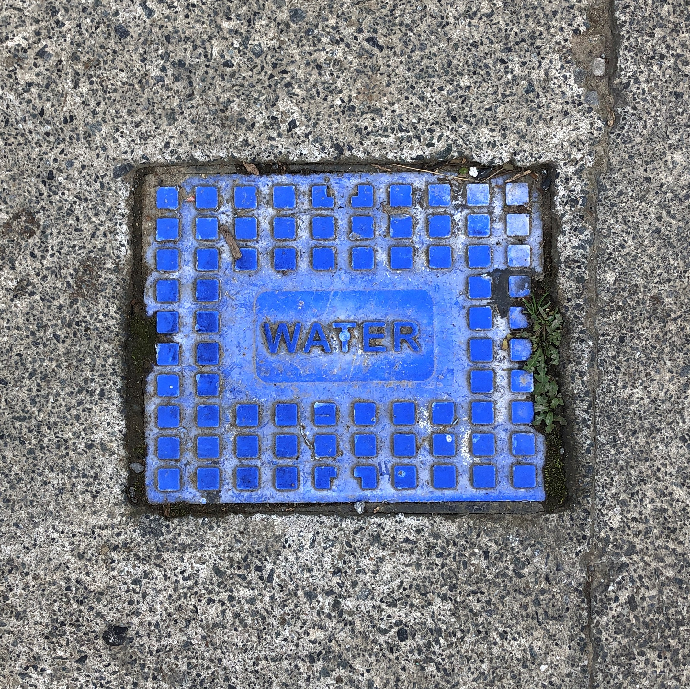
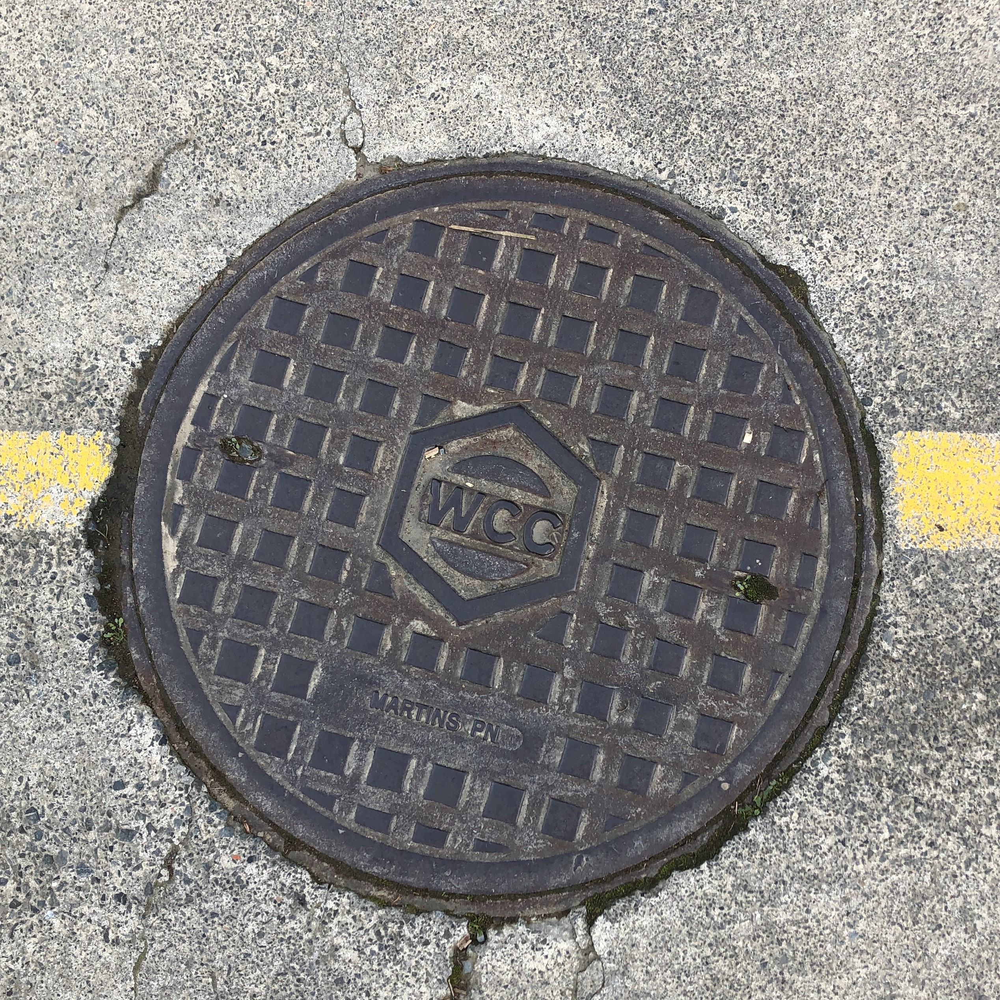
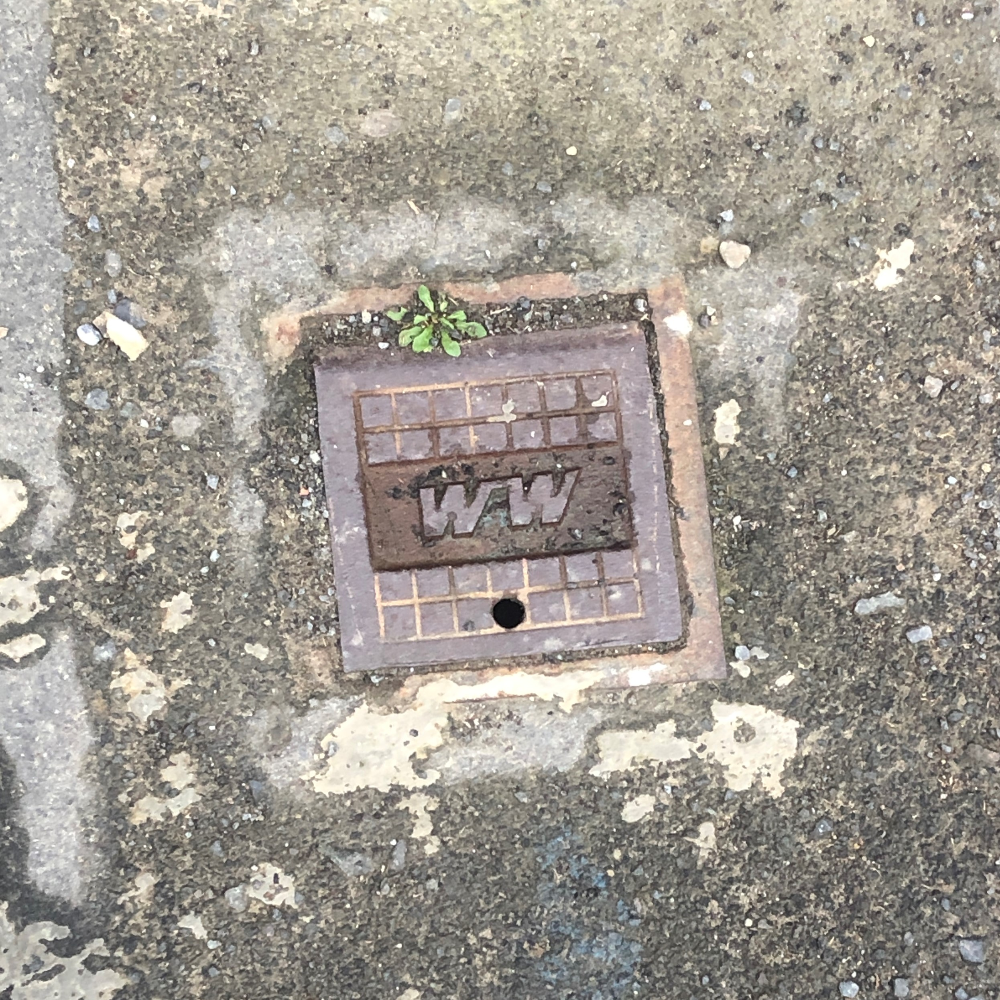
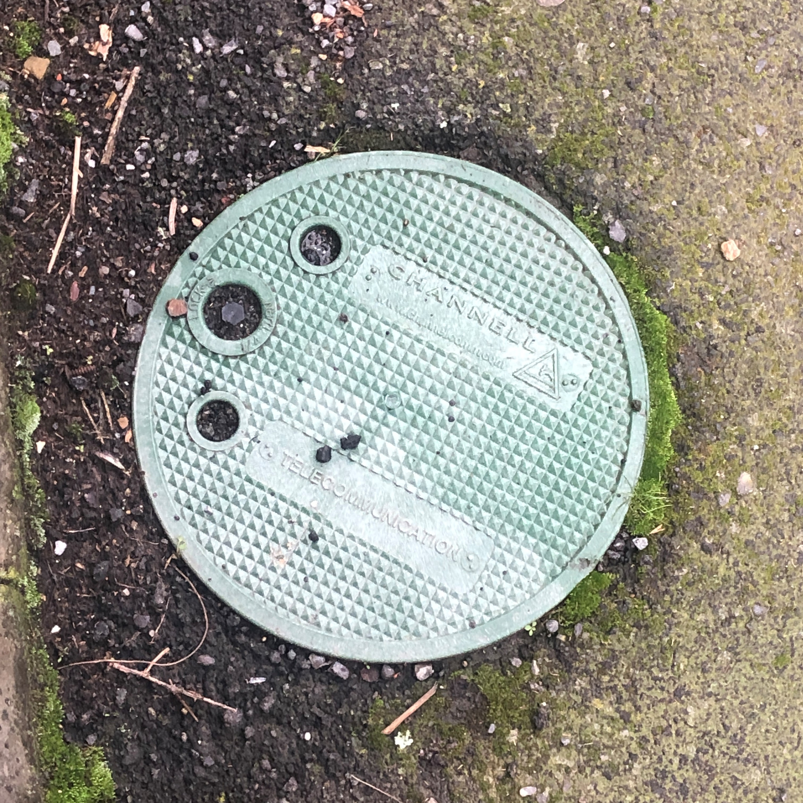
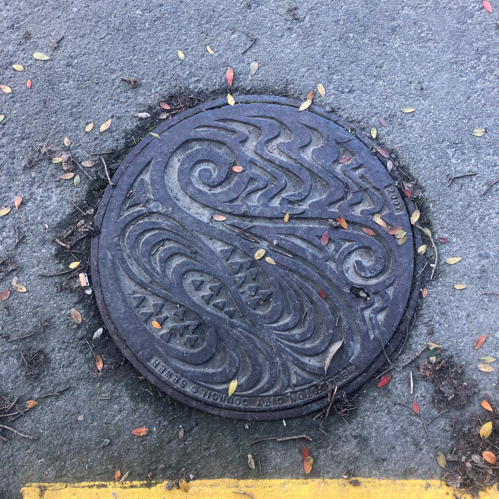
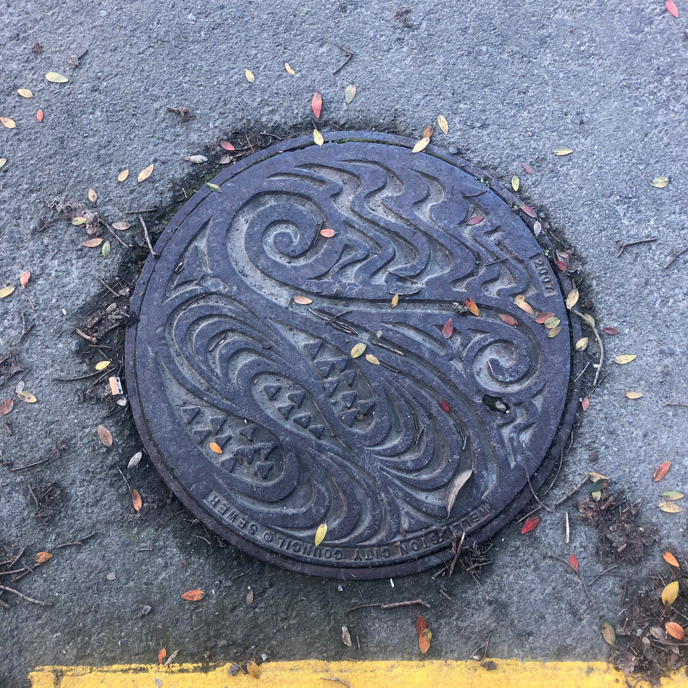
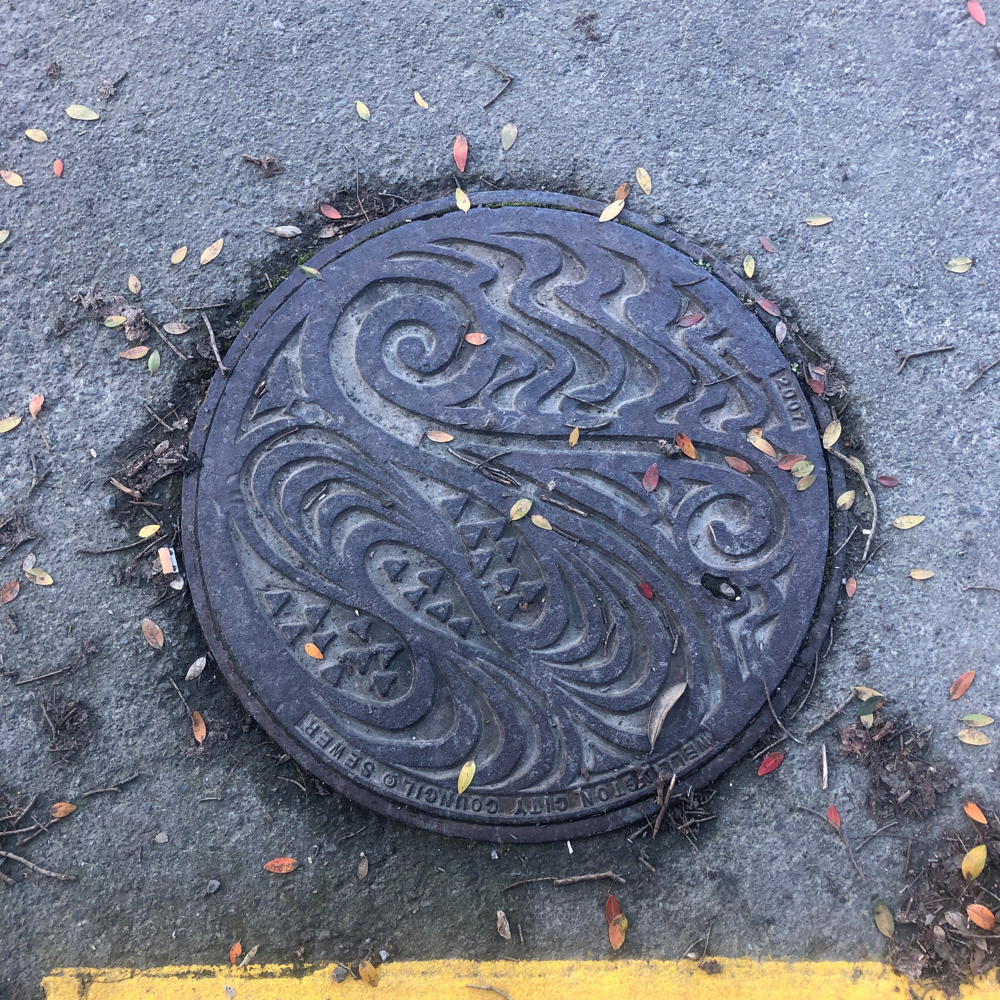

These covers are access points to the underground networking in Wellington. These networks provide things like water (for mains, stormwater, and seweage), gas, telephone, eletricity, and internet to buildings around Wellington.




 

